우선 대조 원본
사용자 제공 PDF 238쪽. 본문·지시문·악보 배치를 확인하는 기준으로 등록했습니다.
7단계 자료 검토 · 2026-10-24 · 앱 본문 변경 전
사용자 제공 PDF 238쪽. 본문·지시문·악보 배치를 확인하는 기준으로 등록했습니다.
두 신경과 감사 기도 I–IV, 감사송·강복·부록을 포함합니다. DOCX의 양식 범위 차이를 확인할 수 있습니다.
주요 페이지 이미지 확인. 전체 문장·음표 교감 및 판본 확인은 미완료. OCR은 검색 보조입니다.
PDF의 의미 구분을 참고하며 기존 와인색 디자인은 유지합니다. 신경 전체 악보 등 파일 밖 자료를 참조하는 부분도 있습니다.
PDF 쪽과 책 쪽은 다릅니다. 책 쪽은 확인한 표본의 +534 탐색 대응이며 제목 쪽에는 인쇄 번호가 없을 수 있습니다.
책 537쪽 탐색 대응
원본 페이지 열기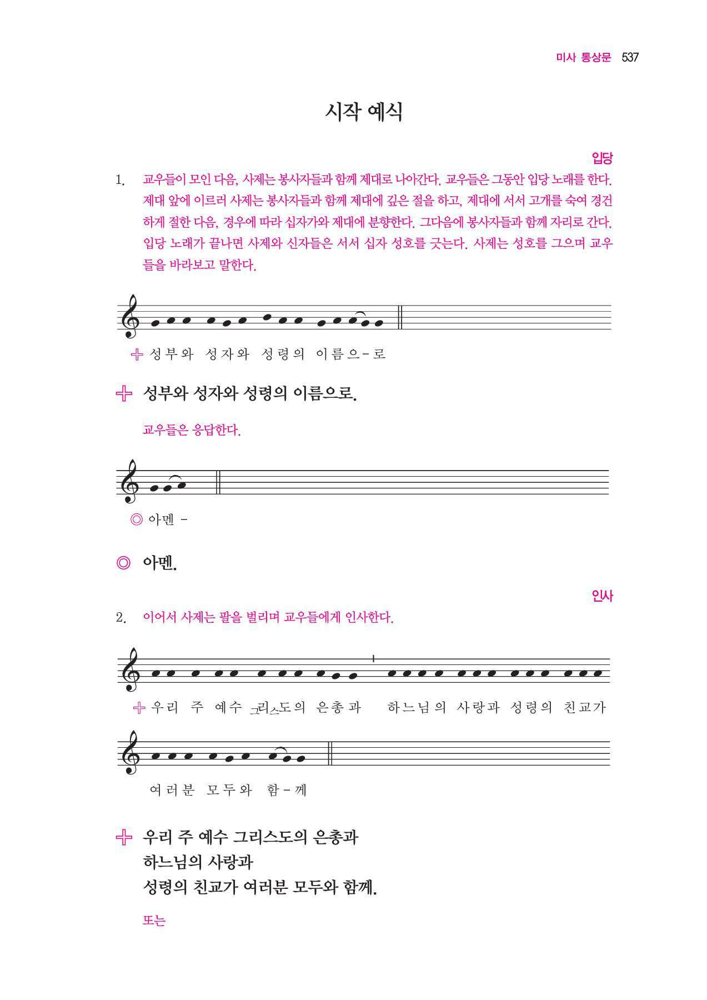
책 549쪽 탐색 대응
원본 페이지 열기
책 550쪽 탐색 대응
원본 페이지 열기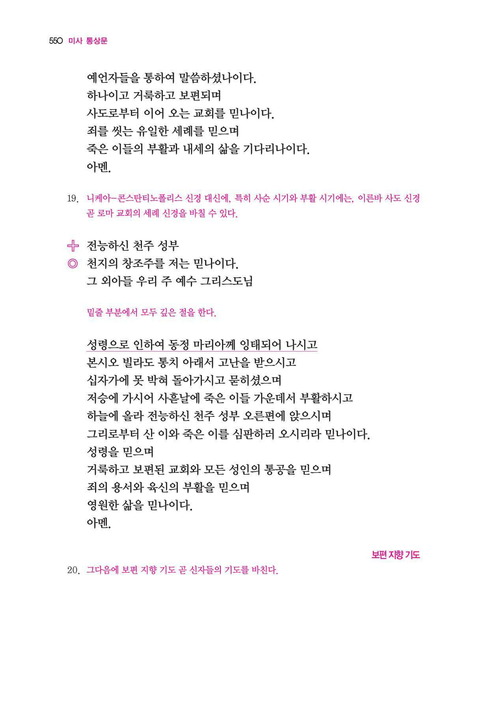
책 607쪽 탐색 대응
원본 페이지 열기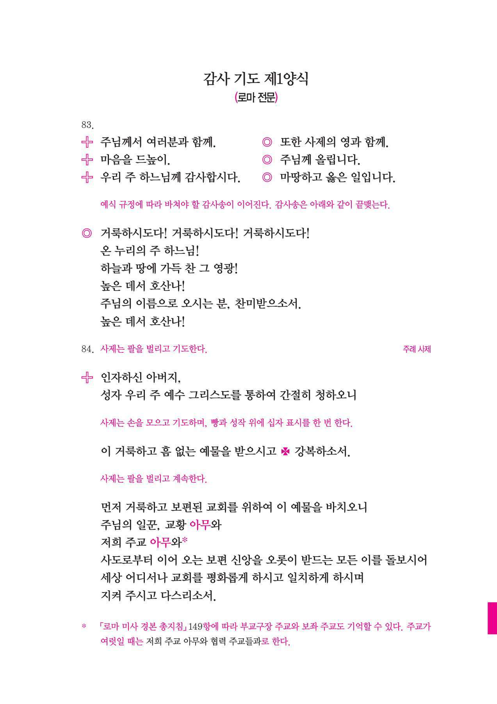
책 616쪽 탐색 대응
원본 페이지 열기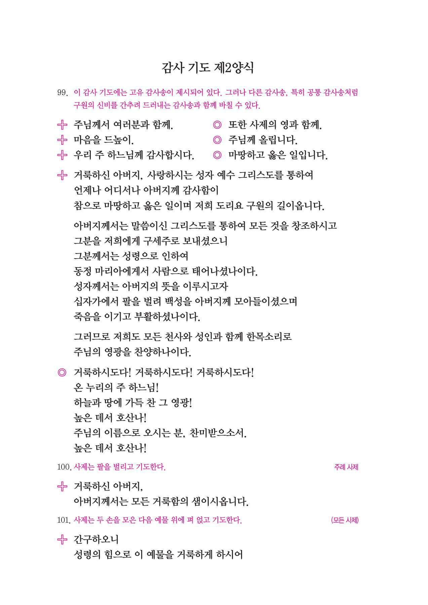
책 621쪽 탐색 대응
원본 페이지 열기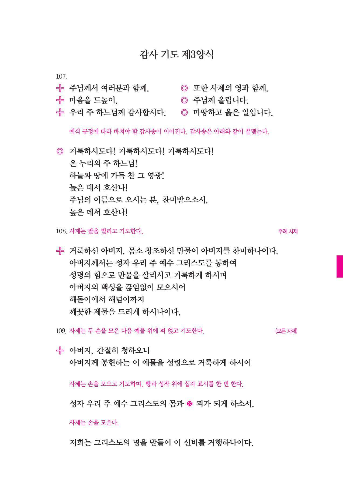
책 627쪽 탐색 대응
원본 페이지 열기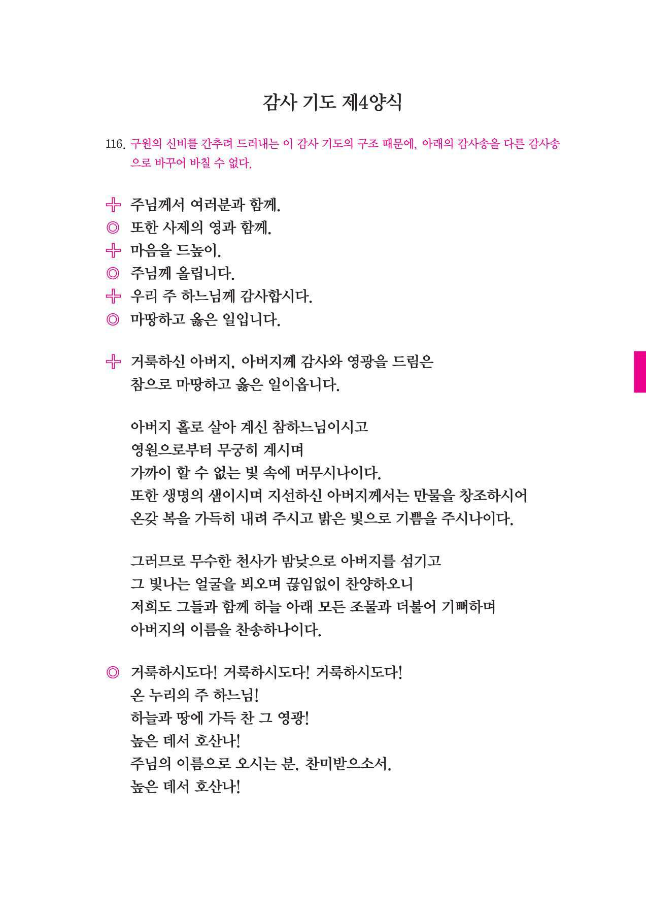
책 633쪽 탐색 대응
원본 페이지 열기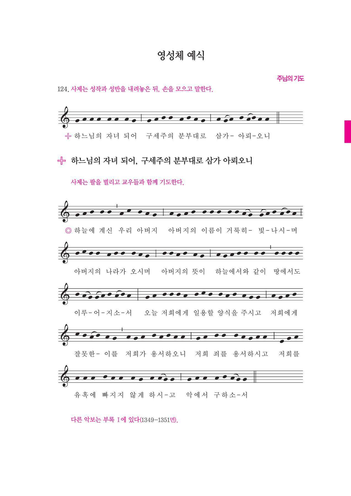
책 640쪽 탐색 대응
원본 페이지 열기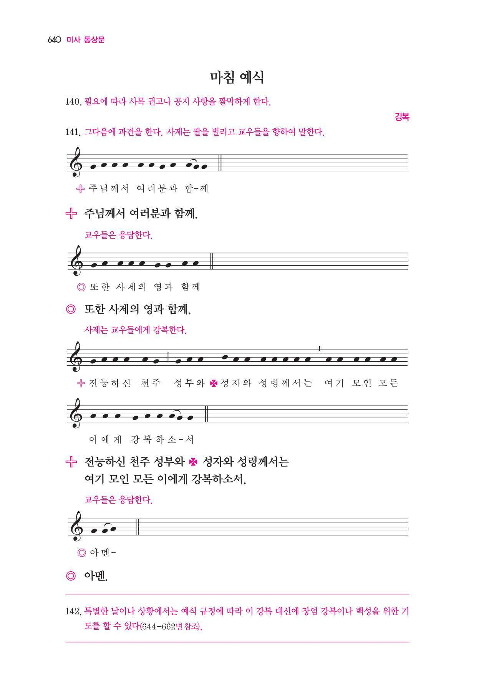
책 717쪽 탐색 대응
원본 페이지 열기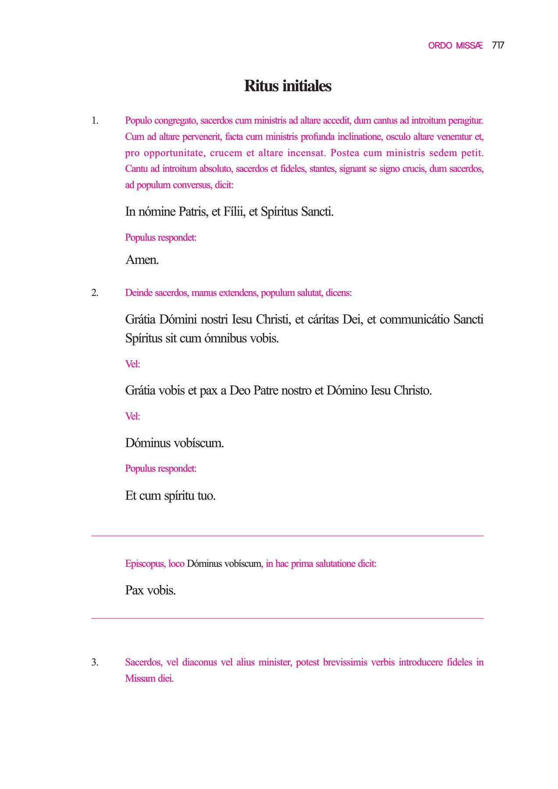
책 741쪽 탐색 대응
원본 페이지 열기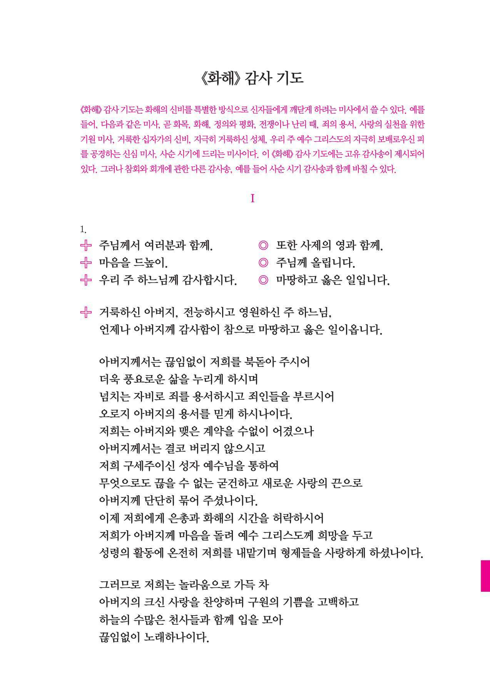
책 772쪽 탐색 대응
원본 페이지 열기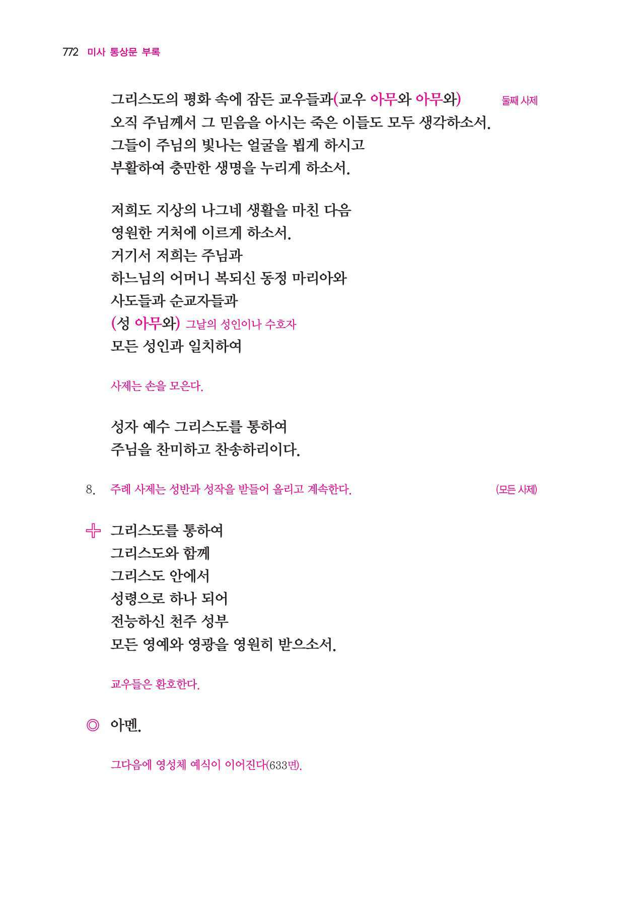
현재 앱 통상문과 감사 기도 제2양식에 항 번호·PDF쪽을 연결하고, 본문/사제/합송/지시문/선택문을 구분하여 대조합니다.
메일 문의는 출시 준비 때까지 보류합니다.